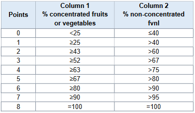
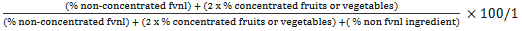
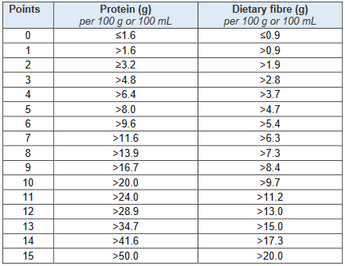

Determining the HSR V points
The method for determining the HSR V points is the same as that detailed in Schedule 5,
however
for the purposes of the HSR system the HSR V points allocated have been expanded.
HSR V points can be scored for fruits, vegetables, nuts and legumes (fvnl) including coconut,
spices, herbs, fungi, seeds and algae content including:
• fvnl that are fresh, cooked,
frozen, canned, pickled or preserved; and
• fvnl that have been peeled, diced or cut (or
otherwise reduced in size), puréed or dried.
• fruit juice or vegetable juice as
standardised
in Standard 2.6.1 of the Code including concentrated juices and purées;
• coconut flesh
(which is to be scored as a nut), whether juiced, dried or desiccated, but not processed
coconut
products such as coconut milk, coconut cream or coconut oil; and
• the water in the
centre of
the coconut.
HSR V points cannot be scored for:
1) a constituent, extract or isolate of a food e.g.
peanut
oil, fruit pectin and de-ionised juice; or
2) cereal grains mentioned as a class of food
in
Schedule 22.
HSR V points may be scored for:
Flours derived from vegetables and legumes are eligible to
score HSR V points as per the HSR V points scoring criteria above. Vegetable flours score V
points as concentrated fruit or vegetable and legume flours score HSR V points as a
non-concentrated fvnl source.
For products that may be considered a cereal grain, but are
not
listed under Schedule 22 of the Code, and/or for products where it is not clear whether or
not
they would be classed as a fruit, vegetable, nut or legume for the purposes of scoring HSR V
points, advice can be sought from the HSR Advisory Committee (through the FoPL Secretariat).
Calculating HSR V points for ‘As sold’ versus ‘As consumed’ needs to consider:
The
percentage
of fvnl (including concentrated sources) in a product should be calculated in accordance
with
the appropriate method in Standard 1.2.10 of the Code - Characterising Ingredients and
Components of Food - in the product as sold. The exception is when determining HSR V points
for
canned vegetables and legumes, where the percentage of fvnl should be calculated based on
the
products as it would be consumed (i.e. drained) and not the product as sold.
As a result
of
the above, the form of the fvnl in the product used to determine the percentage of
non-concentrated fvnl / percentage concentrated fruits or vegetables will not always be the
same
as the form of the final product to which the HSR applies.
Establish the HSR V points (to
a
maximum of 8) in accordance with Table 4.
Table 4: HSR V points for Categories 1D, 2, 2D, 3 and 3D

Notes to Table 4
• Column 1 only applies if a product contains solely concentrated
fruits
or vegetables. Nuts and legumes are specifically excluded from the definition of fruit
and
vegetables and should be scored under Column 2 in all forms (fresh, dried, roasted
etc.).
• Use Column 1 of Table 4 if the fruits or vegetables in the product are all
concentrated (including dried), for example dried fruit or tomato paste.
• Use Column 2 of Table 4 if:
1. There are no concentrated (or dried) fruits or
vegetables
in the product; or
2. The percentages of all concentrated ingredients are calculated
based on the ingredient when reconstituted (according to Standard 1.2.10-4(3) and
1.2.10-4(4) of the Code); or
3. The product contains a mixture of concentrated fruits
or
vegetables and non-concentrated fvnl sources (after following the formula given below);
or
4. The product is potato crisps or similar low moisture vegetable product.
Products that score ≥13 HSR baseline points are not permitted to score points for protein
unless they score five or more HSR V points in Table 4 above.
If the food product contains a mixture of concentrated fruits or vegetables and
non-concentrated fvnl sources, the percentage of total fvnl must be worked out as
follows:

where:
%non-concentrated fvnl/concentrated fruits or vegetables means the
percentage of fvnl in the food determined using the appropriate calculation
methods.
For the formula above, potato crisps and similar low moisture vegetable products are
taken to
be non-concentrated.
Table 5: HSR V Points for Category 1

Notes to Table 5
• For the purpose of the HSR Calculator a product that is >99.5% fvnl
counts as 100% fvnl where food additives or fortificants have been added e.g. pure fruit
juice with added vitamin C.